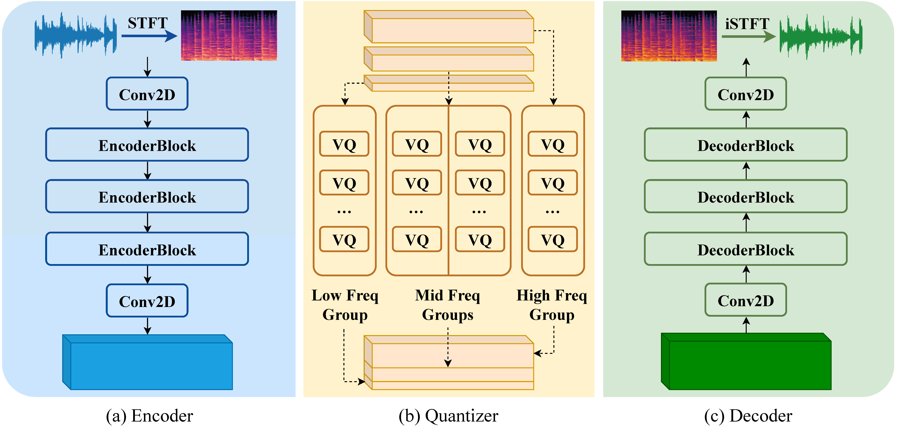
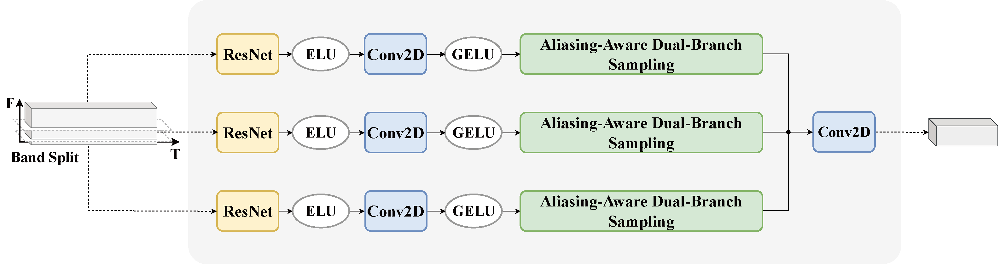
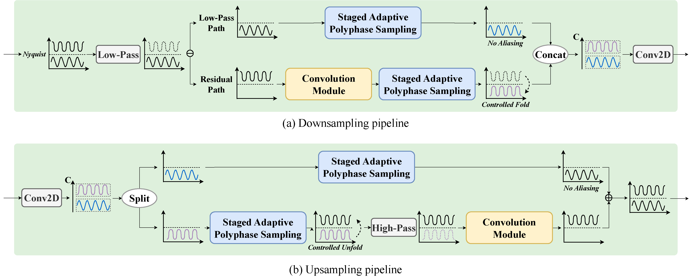
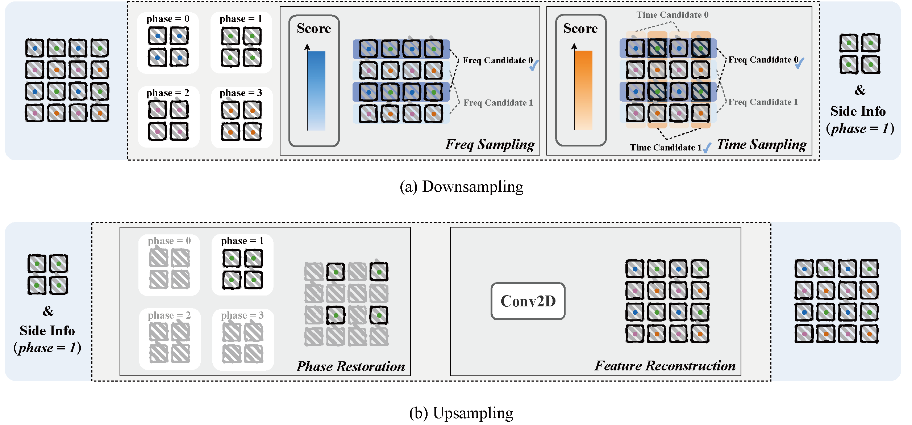
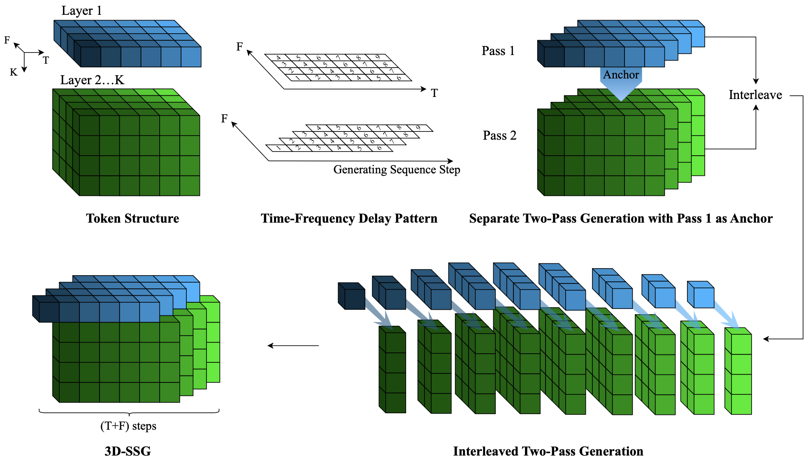

Overview
Abstract
Music compression and generation require representations that are faithful for reconstruction, compact for efficient storage and computation, and expressive for generative modeling. However, the structural and perceptual complexity of music makes it difficult for existing neural audio representations to satisfy these requirements simultaneously. In this paper, we propose MuseCodec and MuseGen, a unified time-frequency framework for music representation learning and generation. MuseCodec operates directly on STFT-domain representations and introduces a psychoacoustically guided subband backbone, Staged Adaptive Polyphase Sampling (SAPS), Aliasing-Aware Dual-Branch Sampling (A2-DBS), and subband-aligned grouped vector quantization to learn compact and faithful discrete time-frequency tokens. Building on this representation, MuseGen introduces 3D Structured Semi-Autoregressive Generation (3D-SSG), which models dependencies in the structured token space while exploiting parallelism for efficient music generation. Extensive experiments show that MuseCodec achieves state-of-the-art reconstruction quality at low bitrates, consistently outperforming representative neural codecs and surpassing 32 kbps Opus at only 15.46 kbps. MuseGen further improves distributional generation quality and audio-prompt continuation consistency while reducing generation steps and inference cost compared with MusicGen. These results demonstrate that structured time-frequency representations offer a compact, faithful, and expressive foundation for music compression and generation.
MuseCodec
Model Architecture




MuseCodec
Music Compression Results on Chinese Songs
MuseCodec
Music Compression Results on English Songs
MuseGen
Model Architecture

MuseGen